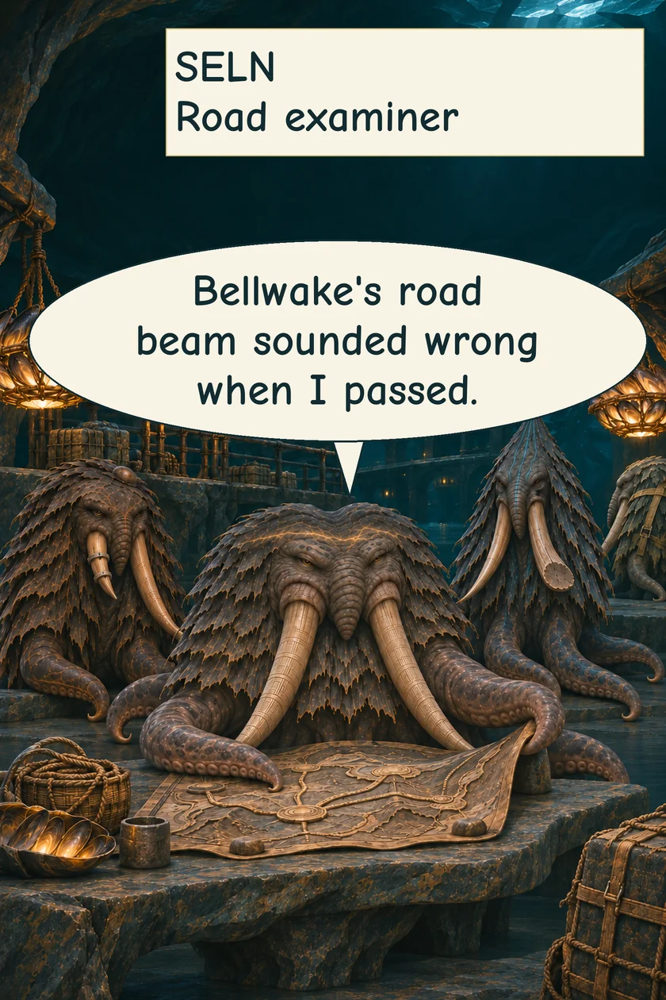
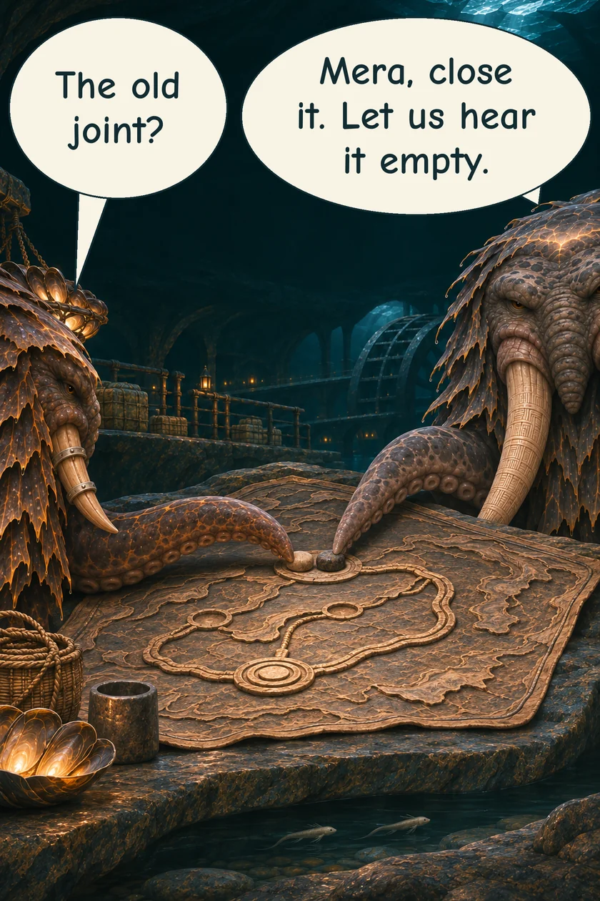
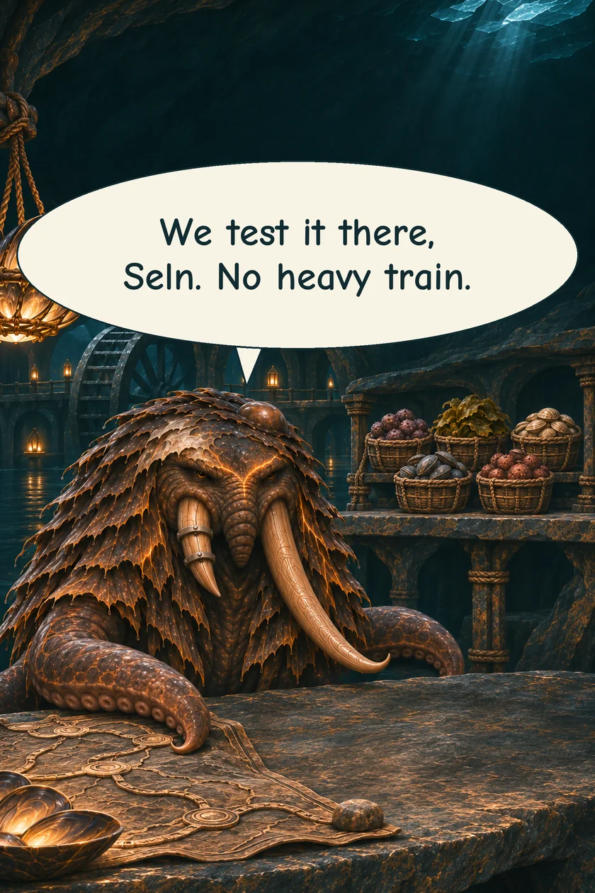
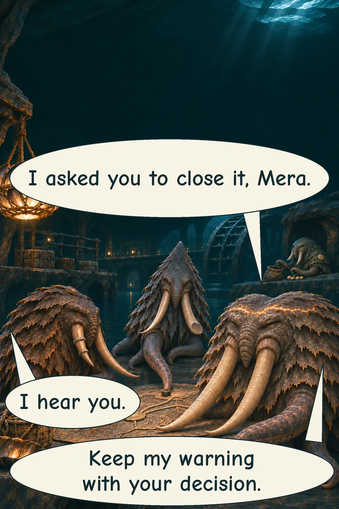

THE ORUUN · TEN YEARS BEFORE HUMANITY AWAKENS
Heard, Not Agreed
Seln hears something wrong in a cargo-road beam. She asks Mera to close the road.
SELN · Road examinerMERA · Mill keeper




The warning stays beside the decision. Being heard has not made Seln agree.
Read the words
Bellwake's road beam sounded wrong when I passed.
The old joint?
Mera, close it. Let us hear it empty.
We test it there, Seln. No heavy train.
I asked you to close it, Mera.
I hear you.
Keep my warning with your decision.